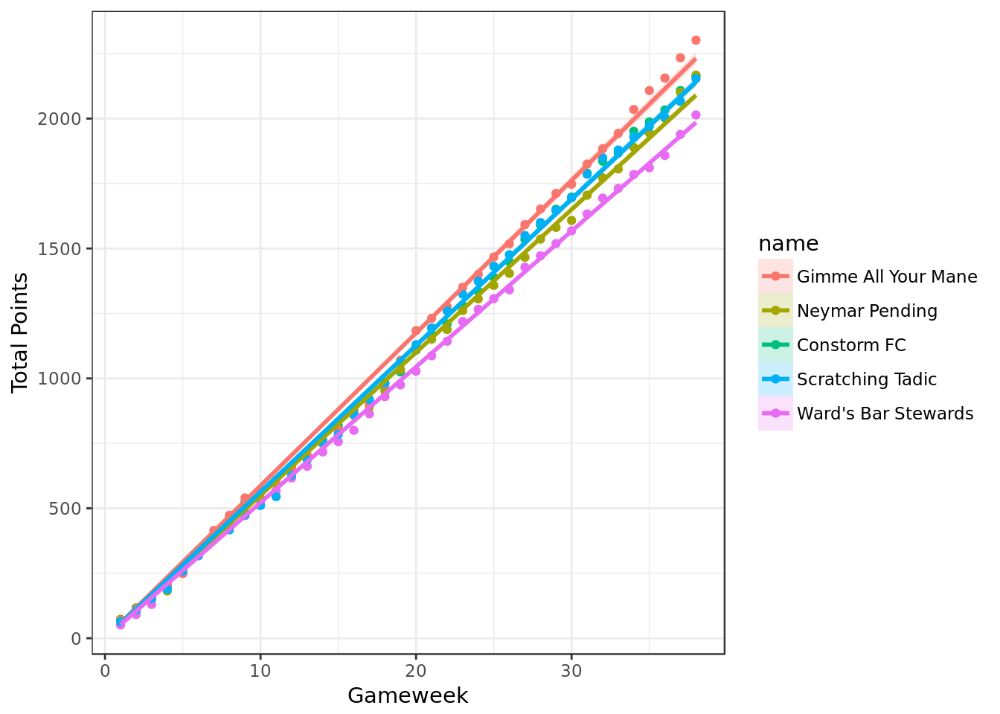
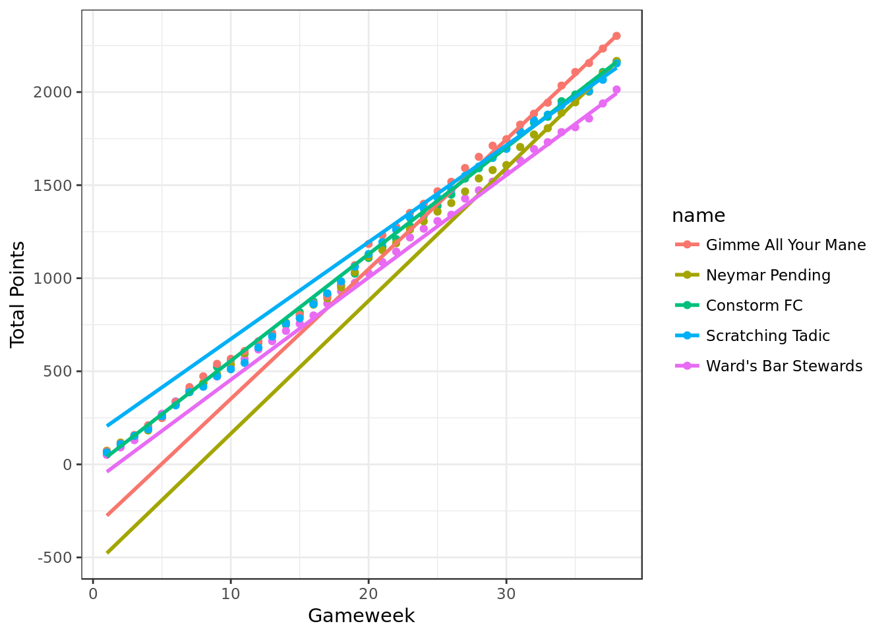
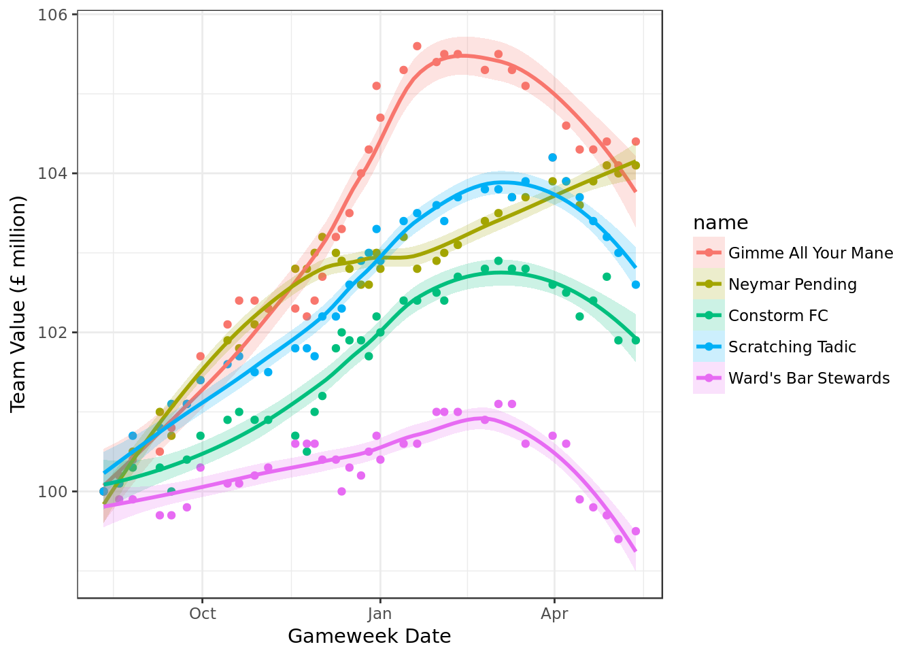
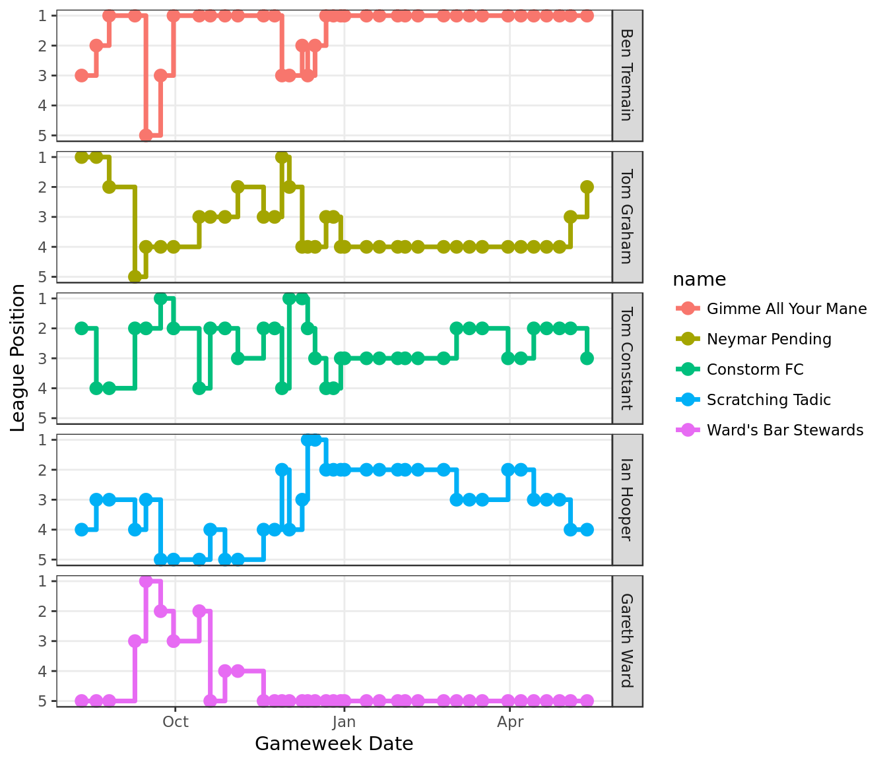
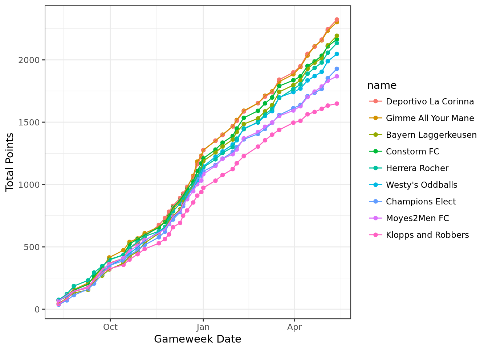
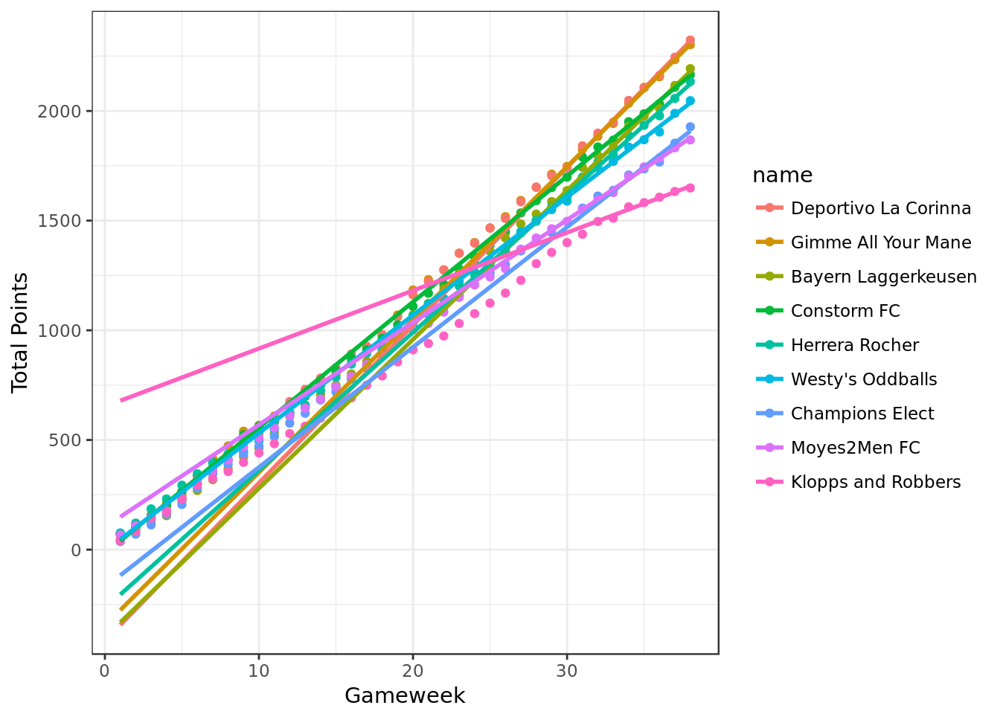
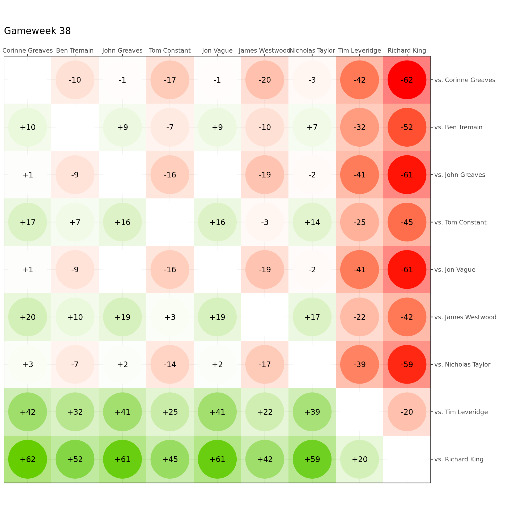
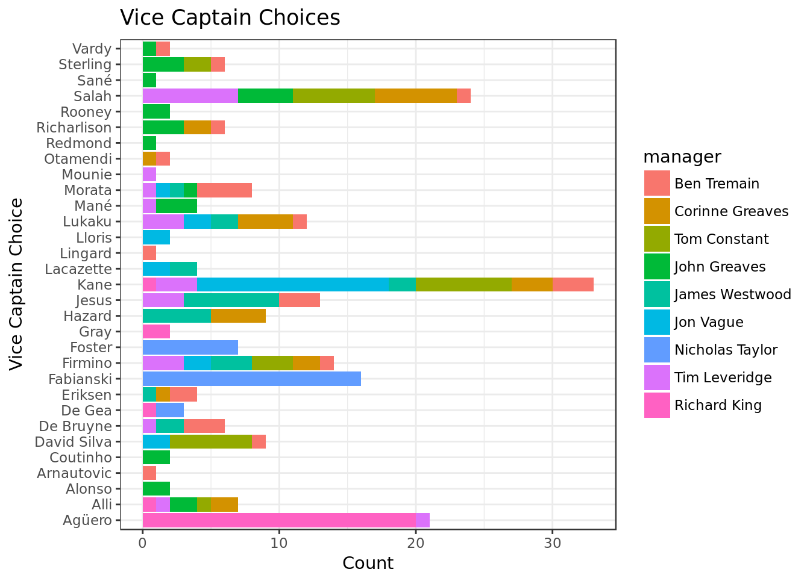

Fantasy Football 2017/18
Tom Constant
Current Ratings
Updated 2018-05-14 05:00:02
Physics Fantasy Football
Table: Physics Fantasy Football
| pos | manager | team | gameweek.points | total.points |
|---|---|---|---|---|
| 1 | Ben Tremain | Gimme All Your Mane | 68 | 2302 |
| 2 | Tom Graham | Neymar Pending | 66 | 2167 |
| 3 | Tom Constant | Constorm FC | 61 | 2165 |
| 4 | Ian Hooper | Scratching Tadic | 88 | 2154 |
| 5 | Gareth Ward | Ward’s Bar Stewards | 75 | 2014 |
Plots: Physics Fantasy Football
Cumulative Score

Linear Regression

Linear Regression: Recent Form (Last 5 GW)

Relative Performance Index
Gain Loss Matrix

Team Value
## `geom_smooth()` using method = 'loess'
Point Distribution By Manager
For a detailed explanation, and results of a hot Monte Carlo simulation, click here

Based on these probability distributions, and simulating 1000 different season outcomes for the remaining gameweeks, the percentage of seasons won by the players can be found in the results of a hot Monte Carlo simulation, (click here)
Mini League Positions

Captain Choices
UoE Premiership
Table: UoE Premiership
| pos | manager | team | gameweek.points | total.points |
|---|---|---|---|---|
| 1 | Corinne Greaves | Deportivo La Corinna | 78 | 2323 |
| 2 | Ben Tremain | Gimme All Your Mane | 68 | 2302 |
| 3 | John Greaves | Bayern Laggerkeusen | 77 | 2193 |
| 4 | Tom Constant | Constorm FC | 61 | 2165 |
| 5 | Jon Vague | Herrera Rocher | 77 | 2134 |
| 6 | James Westwood | Westy’s Oddballs | 58 | 2047 |
| 7 | Nicholas Taylor | Champions Elect | 75 | 1928 |
| 8 | Tim Leveridge | Moyes2Men FC | 36 | 1868 |
| 9 | Richard King | Klopps and Robbers | 16 | 1649 |
Plots: UoE Premiership
Cumulative Score

Linear Regression

Linear Regression: Recent Form (Last 5 GW)

Relative Performance Index

Gain Loss Matrix

Team Value
## `geom_smooth()` using method = 'loess'
Point Distribution By Manager
For a detailed explanation, and results of a hot Monte Carlo simulation, click here
Based on these probability distributions, and simulating 1000 different season outcomes for the remaining gameweeks, the percentage of seasons won by the players is as follows:
Mini League Positions
Captain Choices
